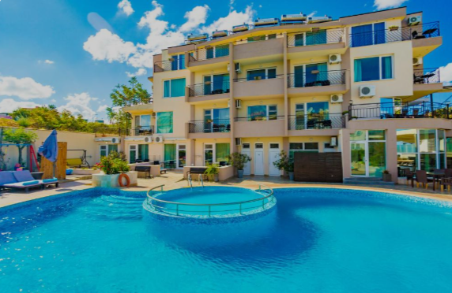
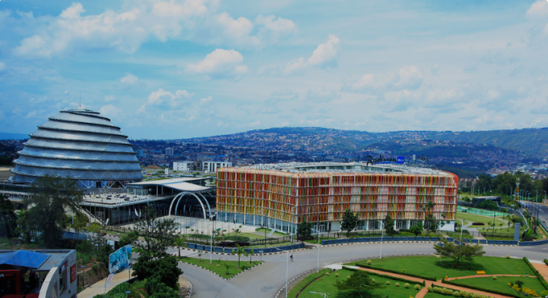
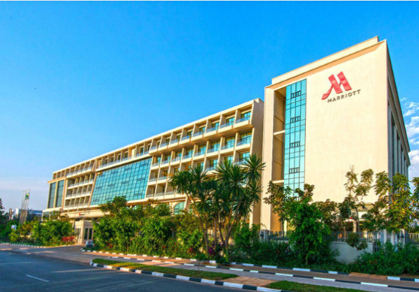
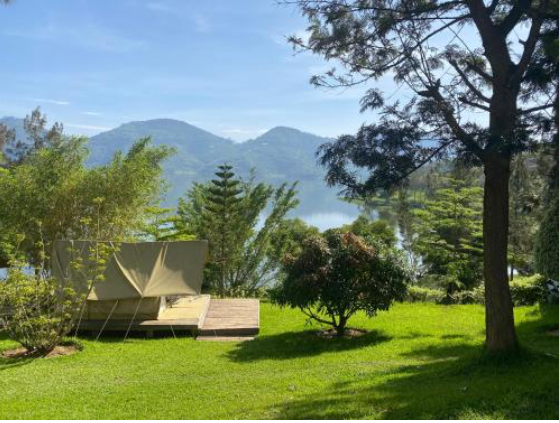
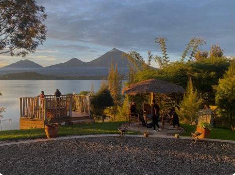
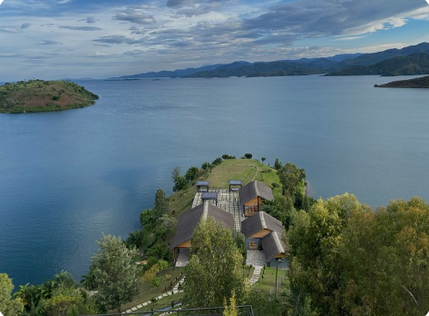

Kigali Serena Hotel
Kigali Serena Hotel is a luxurious sanctuary located in the heart of Kigali. The hotel offers well-appointed rooms and suites with modern amenities and African-inspired decor. Guests can relax by the outdoor swimming pool or stay active at the fitness center. The hotel also features a beautiful garden, spa services, and several dining options including a restaurant, bar, and cafe.
learn moreLocation: Kigali, close to popular attractions like the Belgian Peacekeepers Memorial.
Radisson Blu Hotel & Convention Centre, Kigali
This 5-star hotel is situated near the Kigali Convention Centre, making it an ideal choice for business travelers. The Radisson Blu Hotel features stylish rooms and suites with contemporary design, free WiFi, and stunning city views. The hotel offers an outdoor pool, children's playground, fitness center, and several dining options. Guests can also enjoy the on-site spa and salon for relaxation.
learn moreLocation: Kigali, near the Kigali Convention Centre.
Kigali Marriott Hotel
The Kigali Marriott Hotel is located in downtown Kigali, providing easy access to several embassies and business centers. The hotel boasts spacious rooms and suites with elegant decor and modern amenities. Guests can unwind at the outdoor swimming pool, work out at the fitness center, or enjoy a meal at one of the hotel's restaurants. The hotel also offers meeting rooms and event spaces for business and social gatherings.
learn moreLocation: Kigali, close to several embassies.
Four Points by Sheraton Kigali
Located in Kigali, this hotel offers comfortable accommodations with an outdoor swimming pool, fitness center, and terrace. The Four Points by Sheraton Kigali provides guests with a bar and a restaurant serving African cuisine. The hotel also offers free WiFi throughout the property and free private parking. It's a perfect choice for travelers seeking a blend of comfort and convenience.
learn moreLocation: Kigali, near the Belgian Peacekeepers Memorial.
The Retreat Hotel
The Retreat Hotel is a luxurious boutique hotel located in Kigali. It offers elegantly designed rooms and suites with African-inspired decor and modern amenities. Guests can relax by the outdoor swimming pool, enjoy spa treatments, or work out at the fitness center. The hotel features a serene garden, a restaurant, and a bar, providing a tranquil environment for relaxation.
learn moreLocation: Kigali, a 19-minute walk from the Belgian Peacekeepers Memorial.
Ruhondo Island Retreat
Ruhondo Island Retreat is a serene getaway located in Ruhondo. This 5-star hotel offers guests a unique experience with luxurious accommodations surrounded by nature. The hotel features a garden, free private parking, a terrace, and a bar. Guests can enjoy activities such as hiking, bird watching, and water sports. The retreat also provides 24-hour front desk service, airport transfers, and free WiFi.
learn moreLocation: Ruhondo, 49 km from Mgahinga Gorilla National Park.
CLEO LAKE KIVU HOTEL
CLEO LAKE KIVU HOTEL is located in Mwendo, offering stunning views of Lake Kivu. The hotel features a seasonal outdoor swimming pool, fitness center, and garden. Guests can relax on the terrace, unwind in the hot tub, or enjoy room service. The hotel also offers free private parking and free WiFi, ensuring a comfortable and convenient stay for travelers.
learn moreLocation: Mwendo, 39 km from Mukura Forest Reserve.